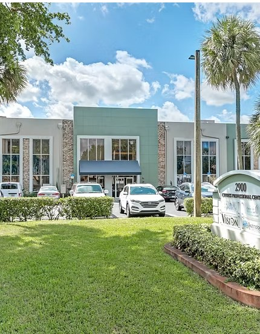
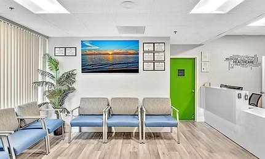
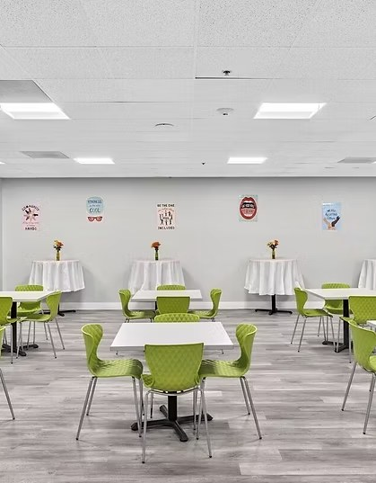
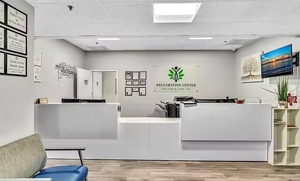

Your Mind Deserves Peace, Even When Anxiety Makes It Feel Impossible.
The constant worrying, racing thoughts, and feeling on edge can be exhausting. You don't have to face it alone. At Reclamation Center, our personalized anxiety therapy helps you manage overwhelming thoughts and take steps toward feeling calm and in control again.
Compassionate • Personalized • Whole-Person Care
We accept all insurance. Our team will verify your coverage when you reach out, so you know what to expect before your first visit.
Does It Feel Like Your Mind Never Gets a Moment of Peace?
You try to relax, but the worrying doesn't stop. If anxiety is making everyday life feel harder, you deserve understanding and support.
For general education only, not a diagnosis.
You Don't Have to Navigate Anxiety Alone
Care that starts with understanding you.
A Safe Space to Talk
Therapy with someone who truly listens, so you can work through what’s weighing on you.
Understanding You First
A caring psychiatric evaluation that shapes a plan built around your life — not a one-size-fits-all approach.
Support at Your Pace
If medication becomes part of your plan, we monitor and adjust it together, every step of the way.
Everything Under One Roof
Therapy, psychiatric, and medical providers working together in one welcoming place.
We Know Reaching Out Isn't Easy. We're Here to Make It Easier.
You don't need to know what to say or have all the answers. We're here to listen, understand, and help you take the next step.
Tell Us You're Ready
Choose a time that works for you. That's all you need to do for now.
We'll Take It From Here
Our team will reach out, answer your questions, and help you feel prepared.
Let's Work Toward Feeling Better
Together, we'll find the care and support that fit your needs.
No pressure. No judgment. Just a team ready to listen.
A Place Where You Can Feel Heard
People of every color, culture, faith, and identity deserve respectful, individualized care. Everyone is welcome at Reclamation Center.
What Our Clients Say
In their own words, from people who have been through our doors.
The office staff was very informative, helpful and friendly. I like how the ARNP spent an ample amount of time with me and was very compassionate. I look forward to going there again and would definitely recommend this office location to others who are in need of psychiatric help.
Since I came to America, Reclamation helped me in my integration and helped me in communication. Reclamation Center is the best center for immigrants.
Reclamation Center is a good place that provides many services. Miss Phara is a good person, very wise and kind. I like Reclamation and all the employees.
The staff at Reclamation Center are doing a good job and my case manager Tania Nelson is super excellent… Ms. Muriel, the teacher for PSR group therapy, helps you with understanding the topics, and she asks how you are doing and checks to see if you are okay for the day.
Step Inside Our Space
A calm, welcoming place to talk, so you know what to expect before you walk in.




Care Close to Home
Visit one of our three South Florida offices.
Questions You May Have
Do you offer therapy for anxiety?
Yes. Our talk therapy uses evidence-based approaches to help people build coping skills and work through challenges.
Can I discuss medication with a provider?
Yes. Our psychiatric team offers evaluations and medication management. Whether medication is right for you is a decision you and your provider make together.
Do you accept insurance?
Yes, we accept all insurance. Our team will verify your coverage when you reach out.
What happens after I reach out?
When you fill out the form, you'll choose the date and time that work best for you. A member of our team will then call to confirm your visit and answer any questions. You can also call 954-343-6552, Mon–Thu 9am–7pm, Fri 9am–5pm.
Still have questions? Call 954-343-6552
You've Been Trying to Hold It All Together. You Don't Have to Do It Alone.
We know how exhausting it can be when your mind won't stop worrying. You deserve to feel heard, understood, and supported. We're here when you're ready.
Monday–Thursday, 9:00 am–7:00 pm · Friday, 9:00 am–5:00 pm
Fort Lauderdale, Boynton Beach, and Hollywood, FL